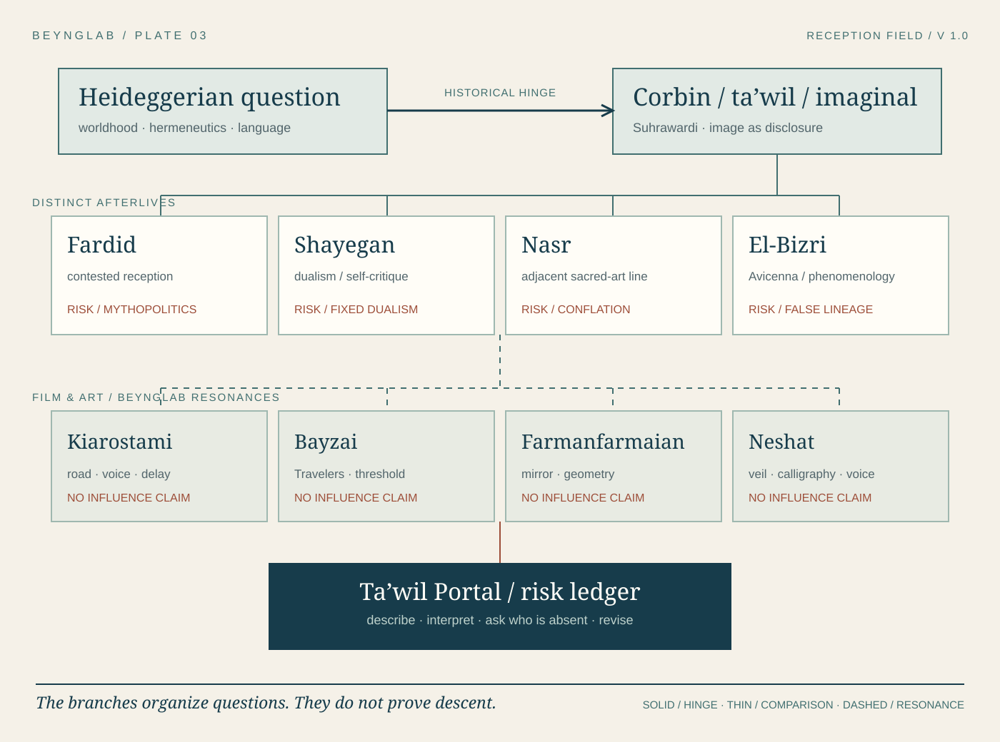

03 / PLATE
Visual argument / version 1.0
After Corbin: branches, not a lineage.
This plate traces a question through Corbin’s imaginal and into different afterlives. The film and art row is a set of BeyngLab reading resonances, not proof of influence.

Read the plate
The argument in words.
- Question and hinge. Heideggerian worldhood and hermeneutics meet Corbin’s turn to Suhrawardi, ta’wil, and the imaginal. The relation is a historical reception to research, not a merger of traditions.
- Disputed afterlives. Fardid raises mythopolitical danger; Shayegan’s self-critique complicates dualism; Nasr is an adjacent traditionalist line; El-Bizri invites comparison with Avicenna and phenomenology. These are distinct routes.
- Film and art. Kiarostami, Bayzai, Farmanfarmaian, and Neshat are proposed close-reading encounters. The plate marks them Experimental because direct influence is not asserted.
- Return. The Ta’wil Portal asks what an image discloses and what this reading obscures. Attach a risk and an objection before making a design claim.
Solid blue = historical hinge to investigate. Thin blue = editorial comparison. Dashed blue = BeyngLab resonance. Rust return = danger and revision. The arrows organize questions; they do not prove influence.
Sources & status
Historical Corbin’s reception is the report’s point of departure. Interpretive Intellectual branches need their own bibliography before individual articles. Experimental The film/art pairings and geometry are BeyngLab proposals. Read the AIR V report. Revised 28 September 2026.